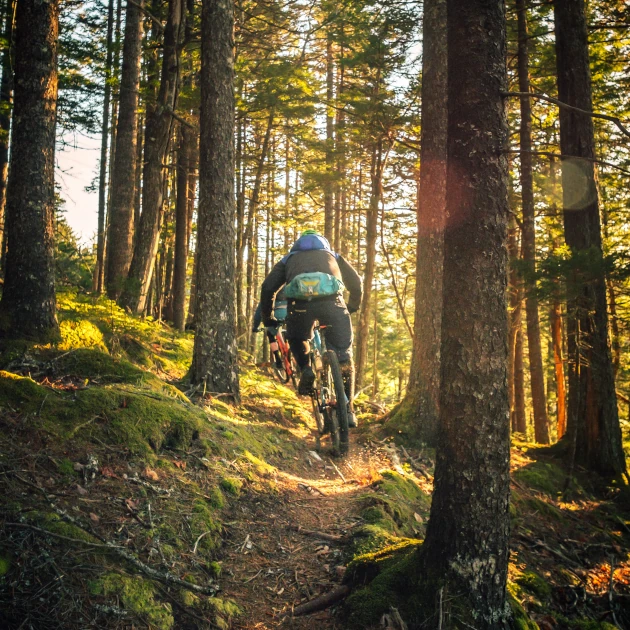

Where Do We Ride?
We ride all over south Wales (and occasionally slip out into Gloucestershire) at the best mountain bike trail destinations. Aside from the big name places we all love is the secret stuff. The stuff only locals know and sometimes even the locals dont know, it's that secret. Unfortunately, those trails we have to keep a closely guarded secret unless you're a member. Is that a bribe? Yeah, maybe. But it keeps the trail builders happy and that means more secret trails.
Check out some of the main spots below and if you want in on the secret stuff, come join us!

BPW
BikePark Wales has the UK's greatest and most diverse selection of all-weather mountain bike trails for beginners to pro riders. With over 40 trails assisted by uplift there's something for everyone here.
Cwmcarn
A valleys original with a bit of everything from technical to flow. Two long loops to pedal round, a shorter flow line to pedal and a few downhill tracks too. Cwmcarn is also the access point to the locally built and now officially accepted Risca tracks.

Afan
Afan is another long standing trail center. So big it has two trail heads serving the trails it provides. There is also a skills park here which is perfect for those looking to practice some more bike park style features such as jumps, drops and flat out berms.
Risca
What started off as some rogue trail builders within Cwmcarn has turned into some of the best tracks in the valleys. These tracks blend flow, tech and gradient seemlessly so as to always offer a challenge but never be too overwhelming. Always a good time.
Wyllie
Another locally built spot that has impressed many. A good mix here but mostly steeper and technical. It's quite normal to be in a deep rut and hanging on for dear life, rear wheel locked and skidding down the hill.

Barry Sidings
Another area built by passionate locals. Truly top class tracks here offering everything from off camber forest loamers and flow to steep rocky 'welsh gold' descents. Something for everyone here with a great cafe at the bottom.